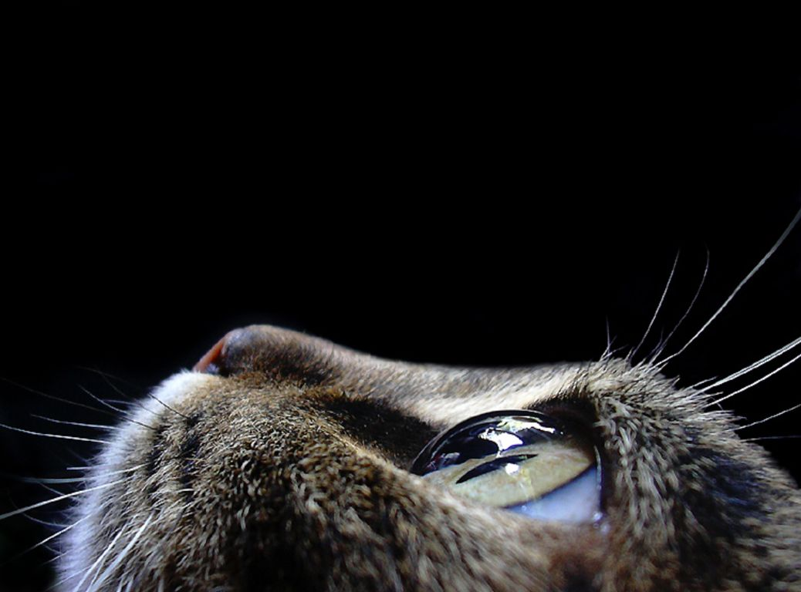

leilagram
De todas as características apaixonantes dos gatos, talvez a mais marcante seja a serenidade e a necessidade de se estar em um lugar calmo e silencioso. Não é à toa que eles sempre acabam escolhendo cantos que nós não conseguimos acessar, como caixas, malas de viagem e, sobretudo, lugares altos. Do alto de suas torres de gato, eles observam o cotidiano de seus donos como verdadeiros soberanos que são. Porém, pensando em simular uma experiência ao ar livre, tiveram a ideia genial de construí-las com árvores reais e o resultado não poderia ser mais incrível.